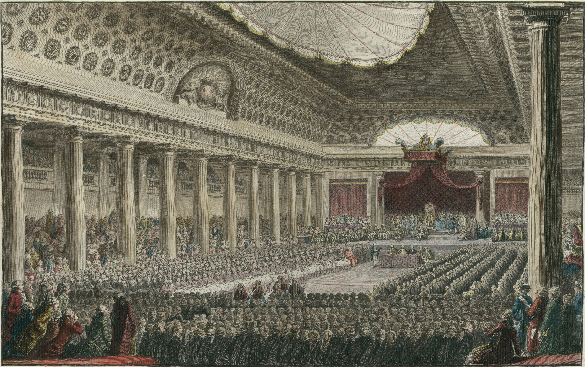
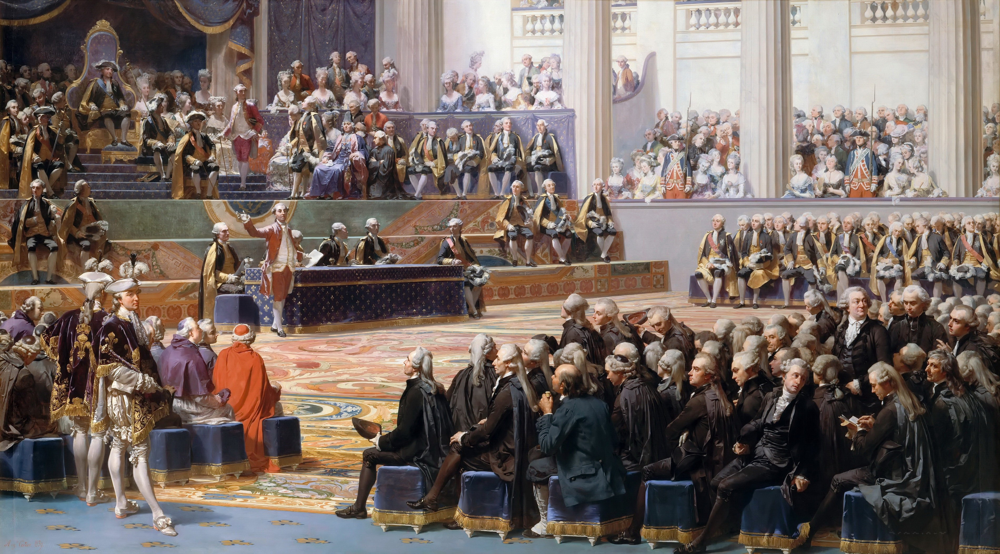
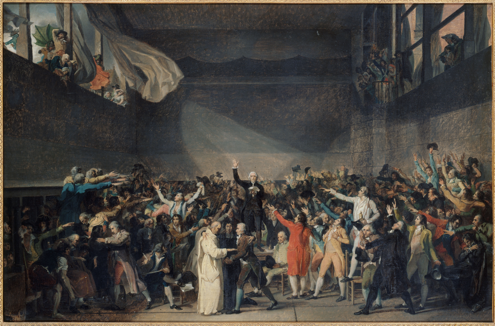
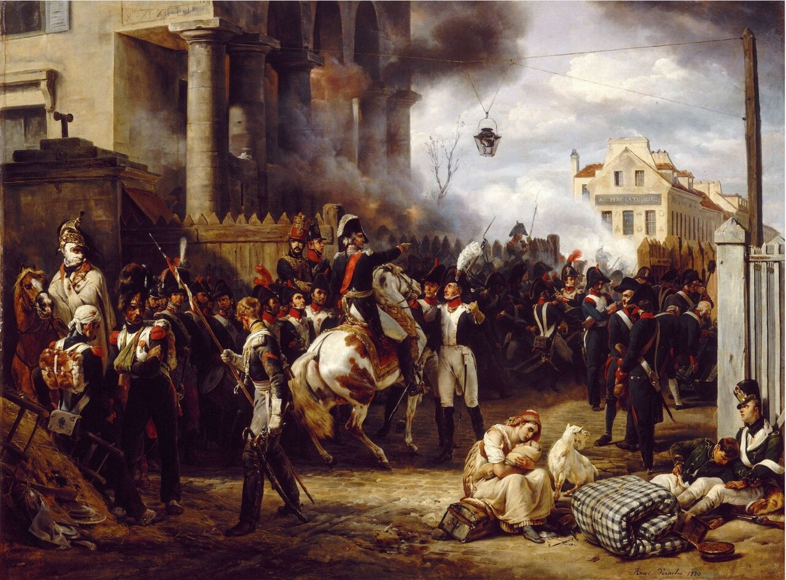
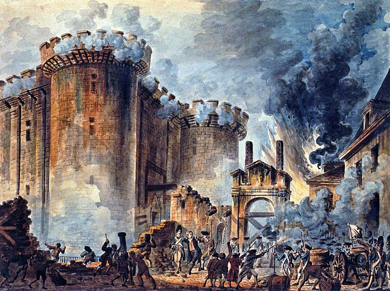

Stany Generalne (maj 1789)
Konflikt o sposób głosowania
Źródło

Zgromadzenie Narodowe
Stan trzeci przejmuje inicjatywę
Źródło

Przysięga w sali do gry
Determinacja reformatorów
Źródło

Wojska pod Paryżem
Działania króla wywołują panikę
Źródło

Szturm na Bastylię
14 lipca 1789
Źródło